← 프로젝트 목록
02 · MOBILE
휙 (hwik)
안 입는 옷을 리폼으로 연결해,
옷의 새로운 가치를 만들어가는 의류 순환 플랫폼
- 구분
- 플랫폼 사용자 행동 분석을 통한 UX 개선
- 기간
- 2026.07.09 – 07.31
- 역할
- UI, Prototype
- 기여도
- UI 40% · Prototype 50%
- Tool
- Figma · ChatGPT · Claude
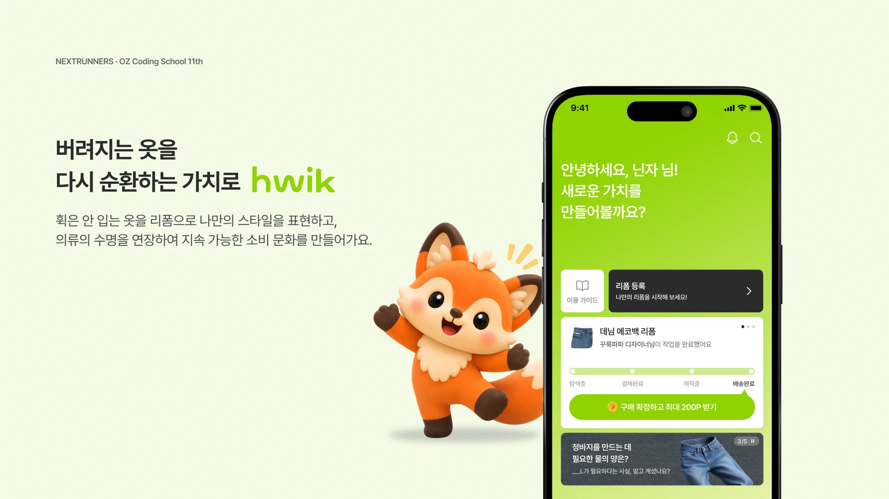
Background
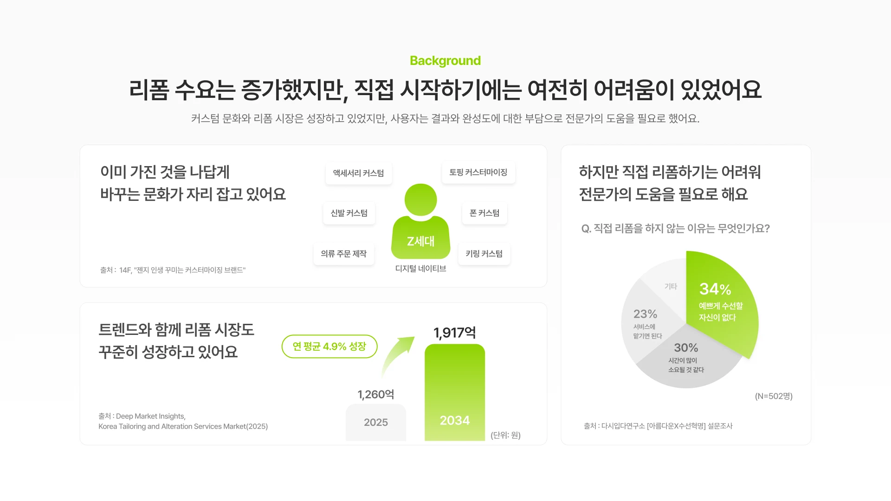
IDI
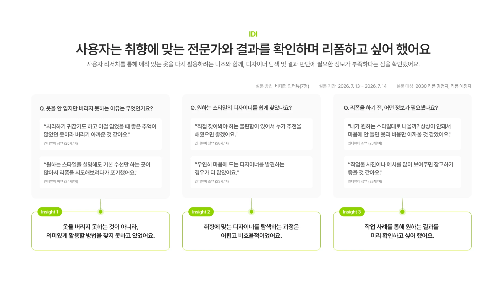
Hypothesis & Project Goal
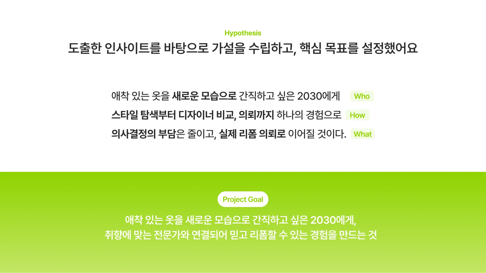
Usability Test
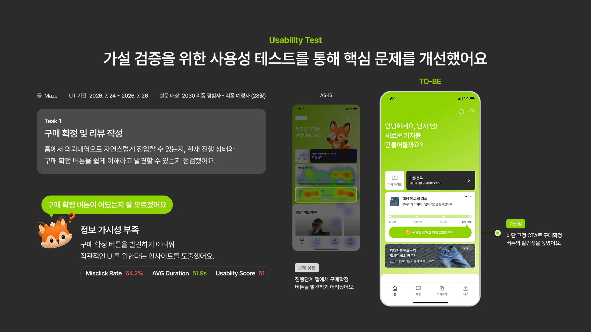
Brand
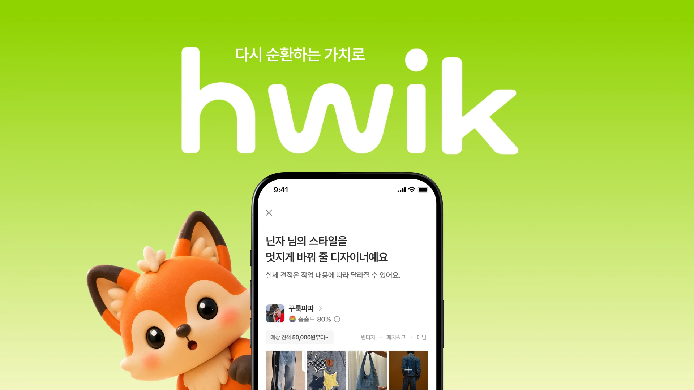
IA & User Flow
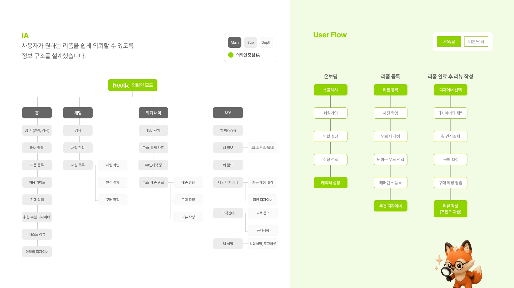
Design System
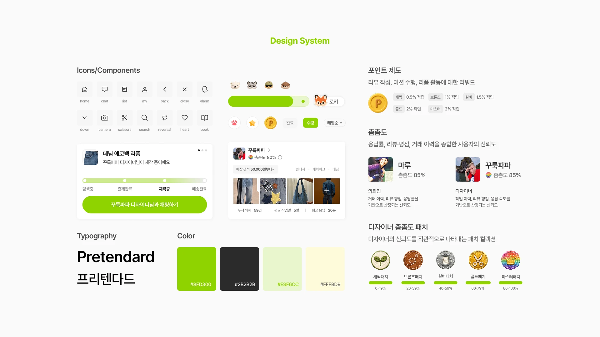
Hwik Friends & Hwik World
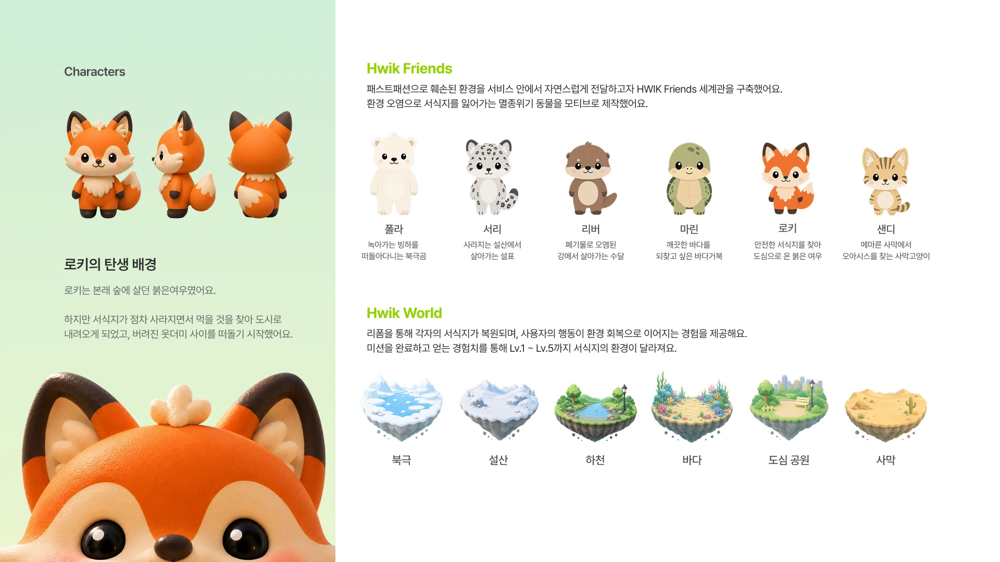
온보딩
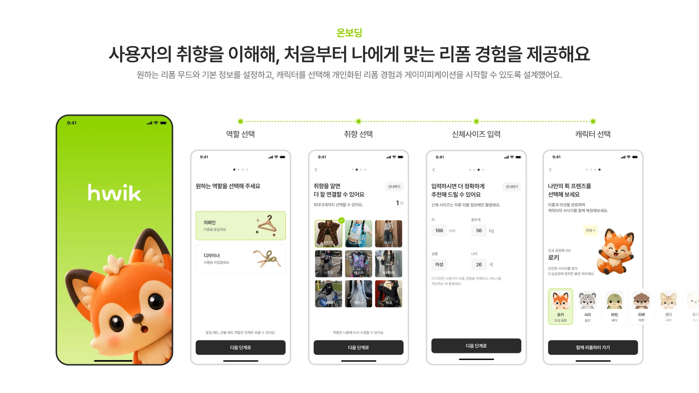
홈 & 탐색
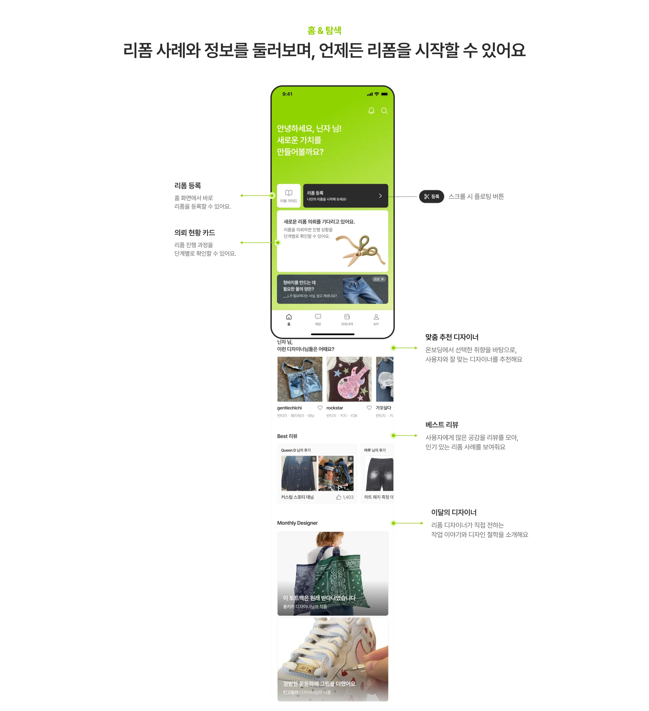
리폼 등록 & 디자이너 매칭
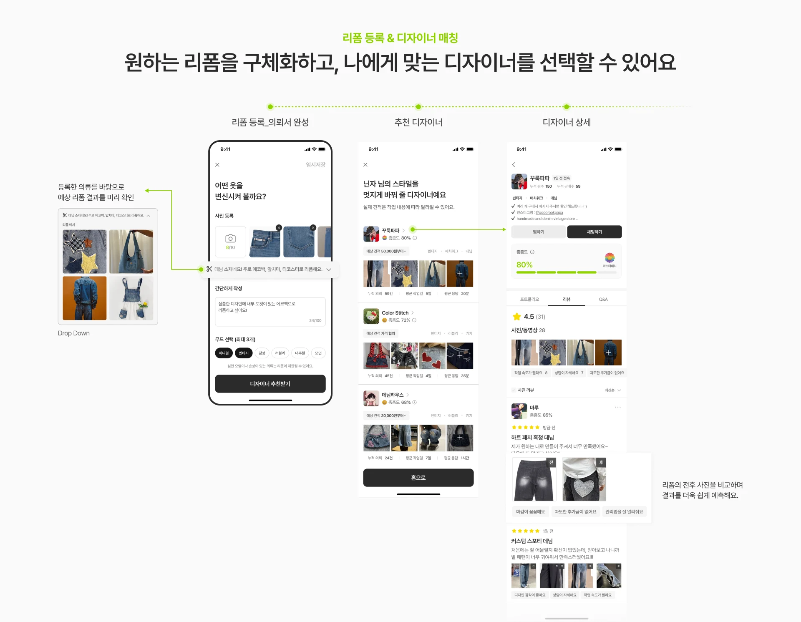
의뢰 과정
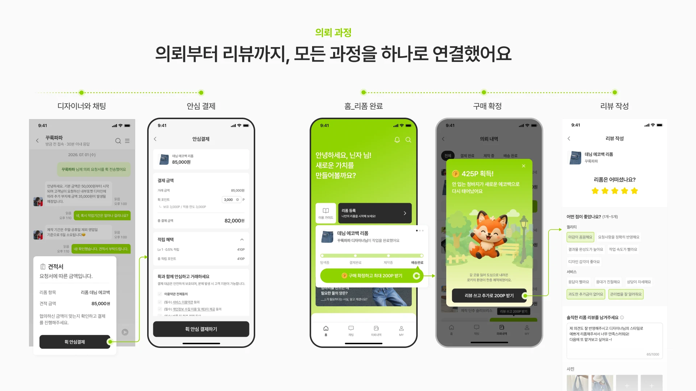
게이미피케이션: 휙 월드
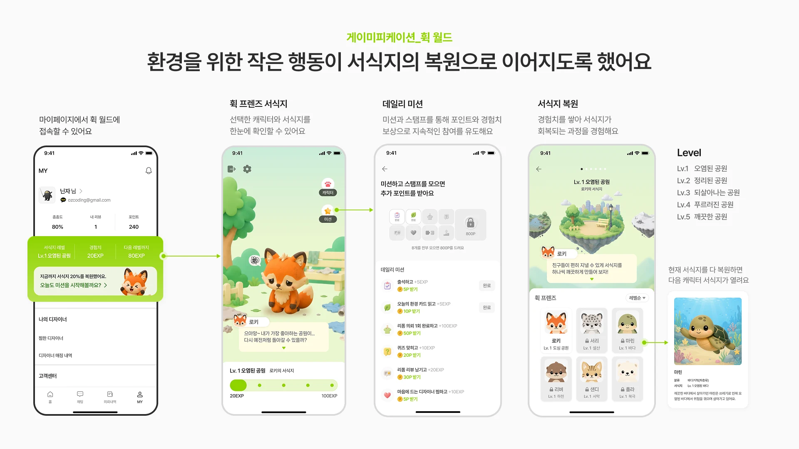
Expected Impact
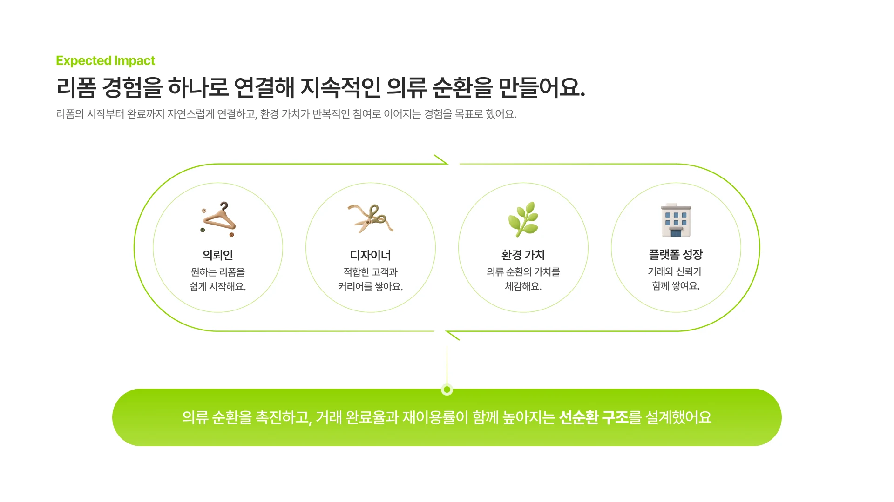
Thank you
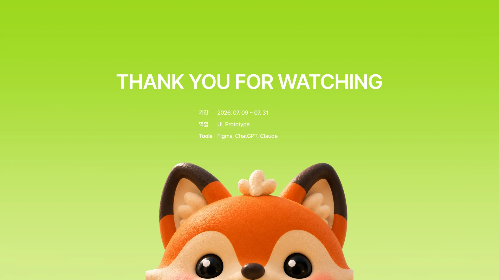